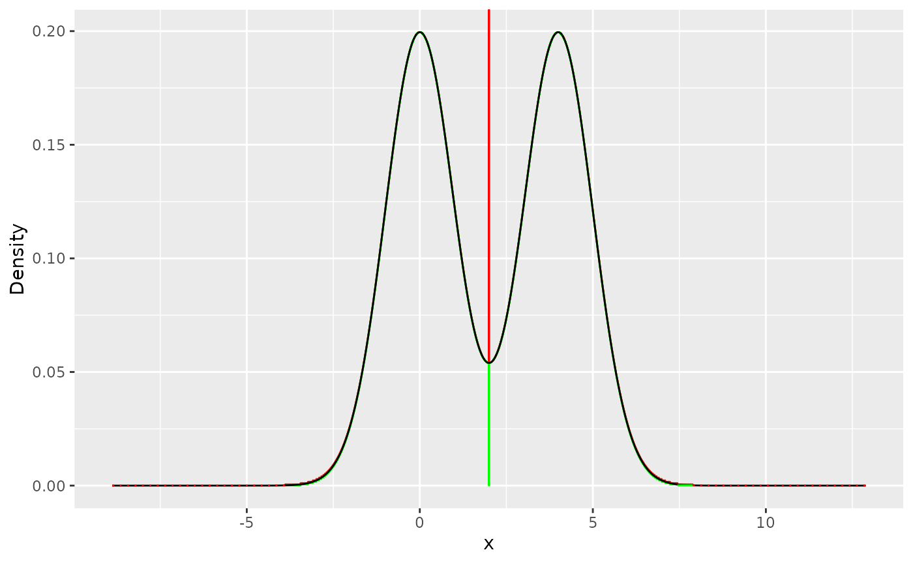

Sampling from User-Defined Distributions using stors
Sampling_user_distributions.RmdIntroduction
The stors package is designed to generate samples from
uni- and multimodal distributions using Rejection Sampling techniques.
While it provides optimized sampling functions for built-in
distributions, STORS also offers flexibility for users to define their
own distributions and create custom proposals for efficient
sampling.
In this vignette, we focus on how to use the stors
package to sample from user-defined distributions. We will demonstrate
how to build custom proposals for distributions not covered by the
built-in functions and how to utilize the package’s functions to sample
efficiently from these distributions.
To sample from user-defined distributions, you can create custom
proposals using the build_proposal() function and then use
the build_proposal() function to create a sampler based on
the custom proposal.
Sampling from User-Defined Distributions
For distributions not covered by the built-in functions and that
satisfy the log-concavity condition, users have the flexibility to
create their own proposals using the build_proposal()
function. This function is designed to handle a variety of distributions
by accepting a range of parameters tailored to the specific needs of the
distribution being sampled from.
The following example demonstrates the process of sampling from a bimodal normal distribution. Let’s assume that you want to sample from a bimodal distribution, which is a combination of two normal distributions , where and :
To sample from the tails of using ARS, we need the log transformation of , , and its first derivative . Also, the modes of are required to build the steps part of the proposal distribution, which in this case are approximately at and .
library(stors)
modes_bi <- c(0.00134865, 3.99865)
f_bi <- function(x) {
0.5 * (sqrt(2 * pi))^(-1) * exp(-(x^2) / 2) + 0.5 * (sqrt(2 * pi))^(-1) * exp(-((x - 4)^2) / 2)
}
h_bi <- function(x) log(f_bi(x))
h_prime_bi <- function(x) {
(-(exp(-1 / 2 * (-4 + x)^2) * 0.5 * (-4 + x)) / sqrt(2 * pi) - (exp(-x^2 / 2) * 0.5 * x) / sqrt(2 * pi)) / ((exp(-x^2 / 2) * 0.5) / sqrt(2 * pi) + (exp(-1 / 2 * (-4 + x)^2) * 0.5) / sqrt(2 * pi))
}
bi_proposal <- build_proposal(lower = -Inf, upper = Inf, modes = modes_bi, f = f_bi, h = h_bi, h_prime = h_prime_bi)
plot(bi_proposal)
After building the desired proposal with
build_proposal(), users can explore its properties using
the print() function and visualize its structure using the
plot() function. This step is similar to what was done
previously with the built-in proposal and helps in understanding the
proposal’s configuration and ensuring that it aligns with the
requirements of the target distribution.
# Printing the properties of the custom proposal
print(bi_proposal)
#>
#> ── Proposal Summary ────────────────────────────────────────────────────────────
#> • Total steps: 4,315
#> • Steps range: [-3.888020, 7.887194]
#> • Sampling efficiency: 99.79%
# Visualizing the custom proposal
plot(bi_proposal)
Once the proposal is configured and validated, it can be passed to
the build_sampler() function. build_sampler()
caches the proposal in memory, providing fast access for sampling, and
returns a sampler function for the target distribution. This sampler
function can then be used to generate samples as needed.
# Creating a sampler function using the custom proposal
bi_sampler <- build_sampler(bi_proposal)
plot(bi_proposal)
# Generating samples from the target distribution
sample <- bi_sampler(10^3)
hist(sample, main = "Sample Generated From Multi-modal Distribution ", xlab = "Value", col = "lightblue", border = "white")Sampling from a Truncated User-Defined Distribution To sample from a truncated user-defined distribution, simply provide the lower and upper truncation bounds using the (lower bound) and (upper bound) arguments. Below, we demonstrate this process using a previously created multi-modal distribution.
Example: Sampling from a Truncated Multi-Modal Distribution
# Define modes for the multi-modal distribution
modes_bi <- c(0.00134865, 3.99865)
# Build a truncated proposal for the multi-modal distribution
bi_trunc_proposal <- build_proposal(
lower = -1,
upper = 6,
modes = modes_bi,
f = f_bi,
h = h_bi,
h_prime = h_prime_bi,
steps = 2040
)
# Visualize the truncated proposal
plot(bi_trunc_proposal, main = "Truncated Multi-Modal Proposal (-1, 6)", xlab = "Value", col = "skyblue")
#> `geom_line()`: Each group consists of only one observation.
#> ℹ Do you need to adjust the group aesthetic?
# Create a sampler for the truncated distribution
bi_sampler_trunc_sampler <- build_sampler(bi_trunc_proposal)
# Generate 10^3 samples from the truncated distribution
sample <- bi_sampler_trunc_sampler(10^3)
# Generate 10^3 samples from the truncated distribution
sample <- bi_sampler_trunc_sampler(10^3)
# Visualize the generated samples
hist(
sample,
main = "Histogram of Samples from Truncated Multi-Modal Distribution",
xlab = "Value",
col = "lightgreen",
border = "white"
)Saving, Loading and Deleting Users’ Proposals
The proposal stored in bi_proposal will not be preserved
across sessions. Therefore, if the user is satisfied with the sampling
results and wishes to store the proposal for future use, they should
save the proposal using the save_proposal() function. This
function takes the optimized proposal and a filename chosen by the user
to save the proposal in the internal R data directory on their machine.
This is recommended if the user plans to use the proposal frequently
across sessions, to avoid re-optimizing the proposal in future
sessions.
save_proposal(bi_proposal, "bimodal_proposal")To load and use the proposal in future sessions, the user only needs
to use the load_proposal() function.
bi_proposal <- load_proposal("bimodal_proposal")In case the user wants to view a list of all previously stored
proposals, the print_proposals() function will provide the
user with all stored proposals.
print_proposals()
#>
#> ── Proposals Data ──────────────────────────────────────────────────────────────
#> Name | Size (KB) | Date
#> -----------------------------------------------
#> bimodal_proposal_1 | 132.16 | 2025-03-03 17:33:52
#> bimodal_proposal_2 | 132.16 | 2025-03-03 17:33:52
#> bimodal_proposal_3 | 132.16 | 2025-03-03 17:33:52
#> bimodal_proposal | 132.16 | 2025-03-03 17:33:52
#> bimodal | 26.88 | 2025-03-03 17:33:16
#> normal | 23.05 | 2025-03-03 17:33:16
#> -----------------------------------------------
#> Total Size: 578.56Be aware that the saved proposal can be quite large in size,
depending on the user’s system. Therefore, if the user wants to delete a
proposal, the delete_proposal() function can be used by
providing the proposal’s name.
delete_proposal("bimodal_proposal")
#> ✔ "bimodal_proposal.rds" proposal deleted successfully
print_proposals()
#>
#> ── Proposals Data ──────────────────────────────────────────────────────────────
#> Name | Size (KB) | Date
#> -----------------------------------------------
#> bimodal_proposal_1 | 132.16 | 2025-03-03 17:33:52
#> bimodal_proposal_2 | 132.16 | 2025-03-03 17:33:52
#> bimodal_proposal_3 | 132.16 | 2025-03-03 17:33:52
#> bimodal | 26.88 | 2025-03-03 17:33:16
#> normal | 23.05 | 2025-03-03 17:33:16
#> -----------------------------------------------
#> Total Size: 446.40